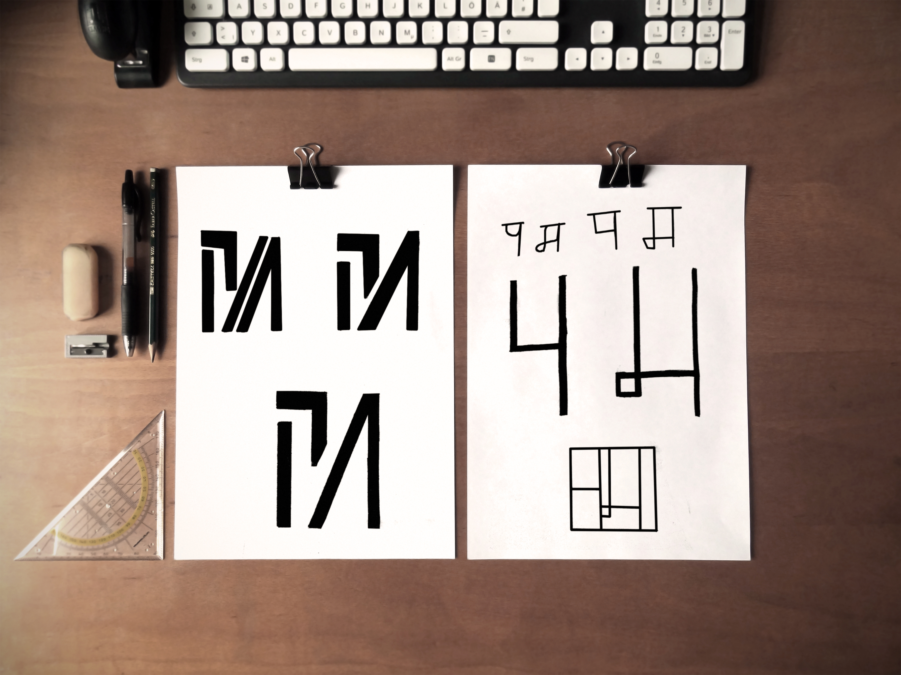

Monogram and Wordmark
This is my final Monogram and Wordmark. I'm extremely pleased with the result, it has the minimal feel I was going for.
I created my brand in a way all the different elements (Monogram, Avatar, Workmark) looks like a consistent system. I incorporated all the elements and designed a business card which looks like a playing card.

My initials are P and M, Below are some of the sketches I made after seeking inspiration. I seem to really like a simple and abstract style of monogram, similar to that of The Mill Logo, The MIT Media Lab logo and Fore design’s logo.

This is my final Monogram and Wordmark. I'm extremely pleased with the result, it has the minimal feel I was going for.
I made some initial sketches of my personal avatar and then made it digital. I implemented a pen / pen tool in my avatar as the tie as I feel as a designer it is very fitting.